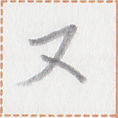
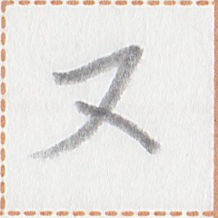

← Previous
Index
Next →
English: I will return in nine days.
Chinese: 我将在九天后返回。
Chinese (pinyin): Wǒ jiàng zài jiǔ tiānhòu fǎnhuí.
Pekzep (latin transcription): pai2 mok1 ty sak2 ie nap1 ut2 kia1.
Pekzep (hanzi transcription): 我行再来於九下日。
Pekzep (linzklā): 


 



Analysis: